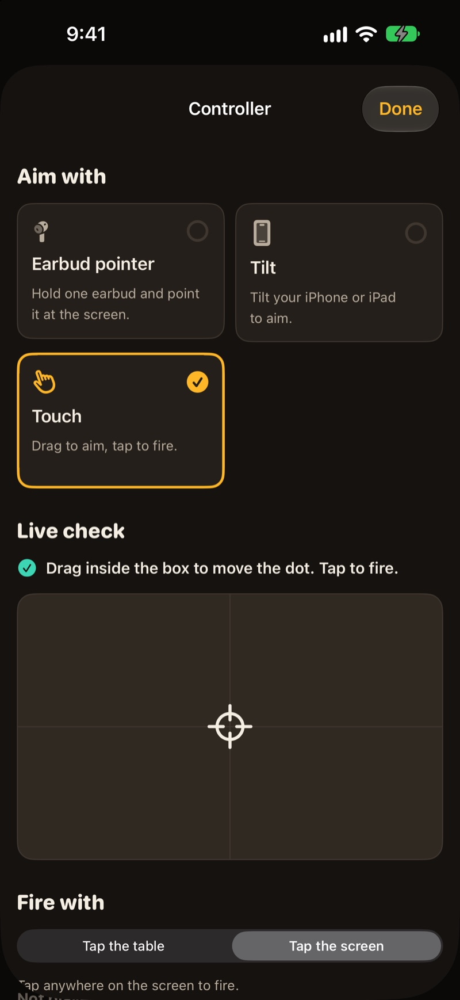
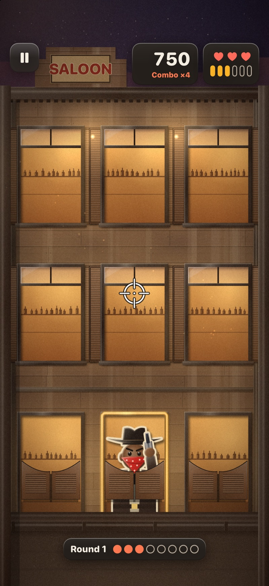
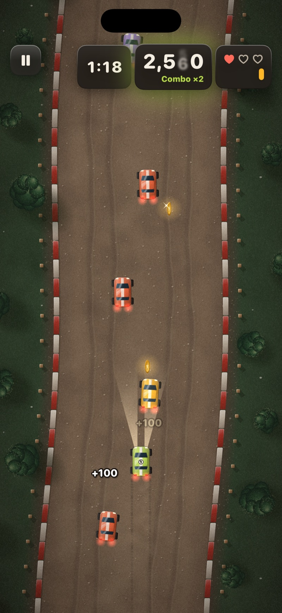
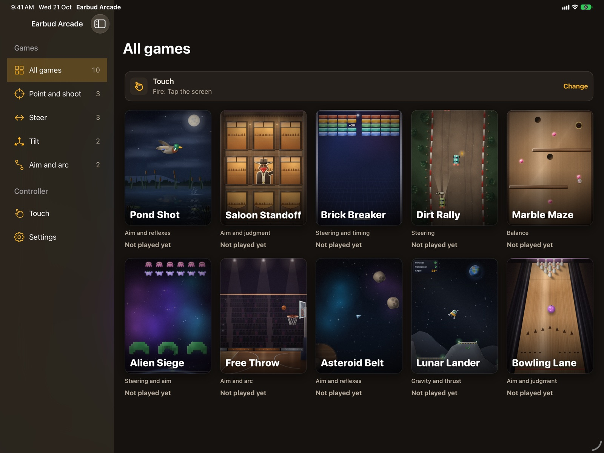
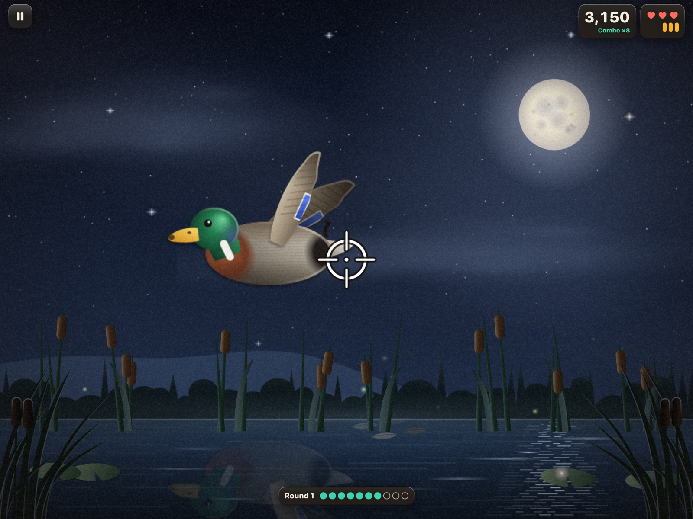
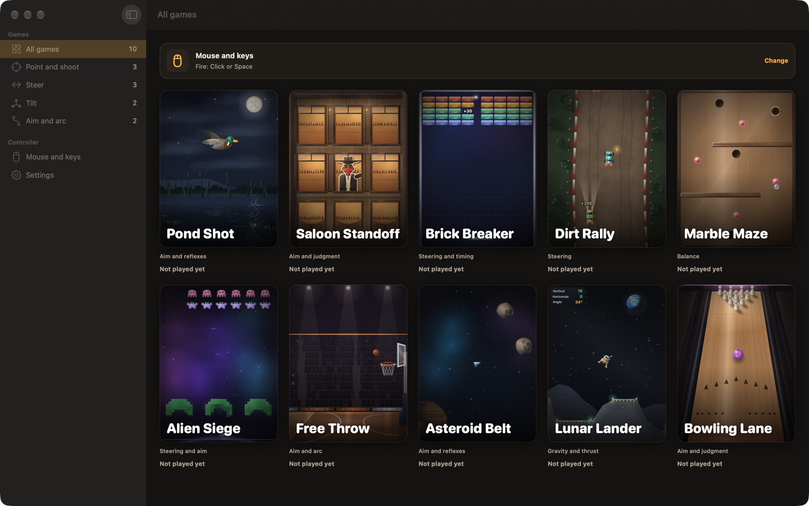
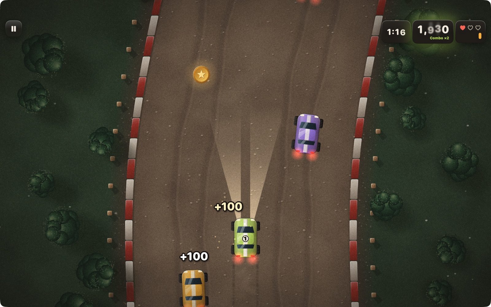
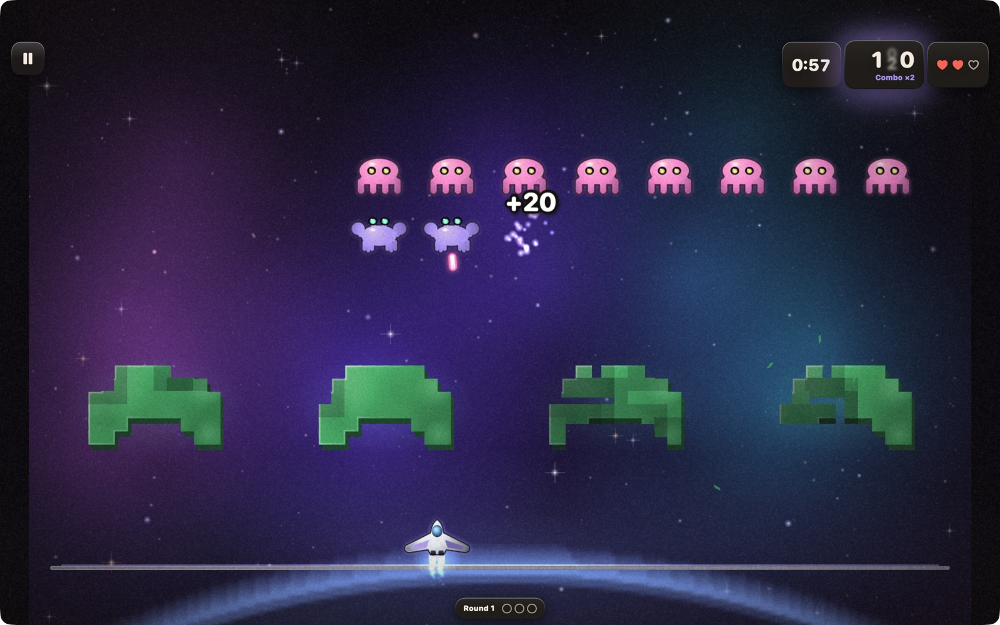
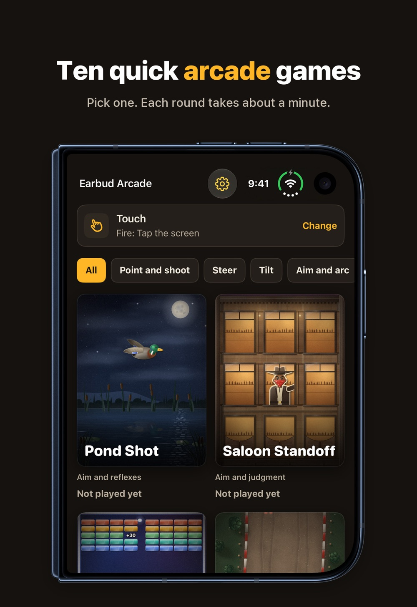
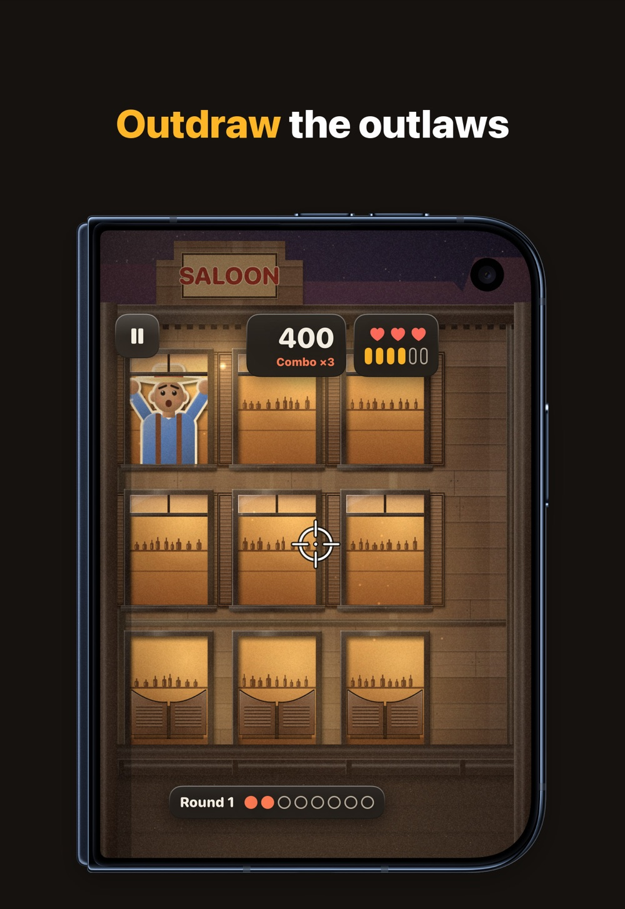

Earbud Arcade
Ten arcade games you aim with a hand-held earbud · updated 21 October 2026
What it is
Earbud Arcade is ten arcade games for iPhone, iPad and Mac. You aim by holding one earbud in your hand and pointing it at the screen, or by tilting the device, touching the screen, or using a mouse and keyboard on Mac. You buy it once. There is no account and no ads, and every game works without a network connection.
The ten games
- Pond Shot: ducks fly out of the reeds. Three shots per duck, three lives.
- Saloon Standoff: shoot the outlaws in red bandanas, spare the civilians, reload with a twist.
- Brick Breaker: steer the paddle, launch the ball, clear both brick sectors.
- Dirt Rally: stay on the road, pass traffic, collect tokens, use turbo.
- Marble Maze: roll the marble to four gems and the goal, and mind the holes.
- Alien Siege: clear three waves from a ship on the bottom rail.
- Free Throw: aim with a dotted path, then watch the hoop start to move.
- Asteroid Belt: split rocks into smaller rocks and reach 600 points.
- Lunar Lander: land on three lit pads without running out of fuel.
- Bowling Lane: aim, add spin, and play five frames with standard pin scoring.
Controllers
- Earbud pointer: works with AirPods that support head tracking; hold one earbud in your hand. Switch off Automatic Ear Detection first, then tap Center pointer to center the crosshair.
- Tilt: on iPhone and iPad, tilt the device to move the crosshair.
- Touch: drag to aim, tap to fire, tap with two fingers to reload.
- Mouse and keyboard on Mac: click or press Space to fire, arrow keys or WASD to steer, R to reload, Esc to pause.
Every game is fully playable without earbuds, so a reviewer needs no accessory. Firing can also be a tap on the table, picked up by the microphone, with a slider and a live meter to set the threshold.
iPhone Duo
On iPhone Duo the app reads the hinge and lays out around the fold. This needs the iOS 27.1 SDK and is built into the 1.0 binary. Every other device keeps the normal layout.
- Partly folded with the crease across the screen (tabletop): the game takes the upper half. The lower half holds pause, recenter, the timer, the lives and the score at 72 point size, so nothing you tap sits on the fold.
- Partly folded with the crease down the screen (book): the game takes the leading half and the controls take the other.
- Open flat: the game fills the inner display and the score, timer and lives plates stay off the crease.
- Library and game detail split at the fold: the grid is centered on the crease, and the detail screen shows the cover on one side and the text and Play on the other.
- Closed: the outer display uses horizontal bars so the settings button and the status strip share the title row.
The two captures below are the open layout, from the store set. There is no tabletop capture yet; the tabletop description comes from the code (Sources/Duo/FoldPlan.swift, Sources/Arcade/HUDView.swift).
Facts
- Version
- 1.0, built with Xcode 27.1. Requires iOS 18, iPadOS 18 or macOS 15.
- Games
- Ten, all included. Each keeps a personal best.
- Controllers
- Four: earbud pointer, tilt (iPhone and iPad), touch, and mouse and keyboard (Mac)
- Platforms
- iPhone, iPad, native Mac (one purchase covers all three), plus iPhone Duo fold layouts
- Languages
- 5 locales: English (US, UK, Australia, Canada) and Spanish (Mexico)
- Price
- Paid once at USD 2.99, no in-app purchases, no ads, no account
- Offline
- Every game works without a network connection
- Privacy
- Anonymous usage events (games played, controller used) go to PostHog under a random install ID, and one switch in Settings turns them off. Motion and microphone data stay on the device and are never recorded. Scores and settings stay on the device. Privacy policy.
- Accessibility
- Light and dark appearance follow the device, Reduce Motion is respected, haptics on iPhone, VoiceOver values on the HUD
- Developer
- One developer in Dubai
Screens
Raw captures of the 1.0 build with the current art, English (US): the iPhone 17 Pro and iPad Pro simulators and a native Mac window. No captions or device frames, except the two Duo images, which are store renders in a device frame.










Context
- The National, 10 September 2026: Apple's foldable phone launched. Covers the iPhone Duo and its 19 cm inner display.
- MacRumors, 29 September 2025: a motorcycle racing iOS game you control with AirPods. Another game steered by AirPods head motion.